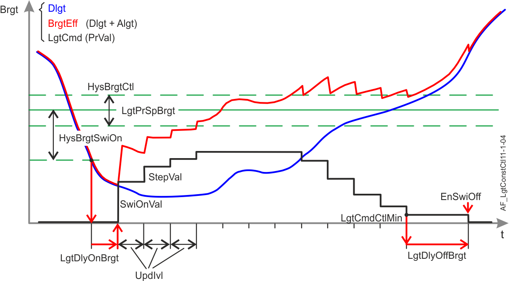

Lighting brightness constant control (LgtConstCtl11)
Overview
The application function "Lighting brightness constant control 11" (LgtConstCtl11) controls the brightness level at a constant value and automatically switches the lighting on and off based on brightness level.
An analog command value for the lighting output is the main output.
Features:
- Modulating lighting command
- Lighting on/off switching
- Setpoint shift
- Correction function for the brightness sensor
- Interacts with the following optional AFs: Lighting green leaf (LgtGrnLf11) and the lighting manager/subordinate functionality (LgtCtlMst11 / LgtCtlSlv11)
Function

Brightness setpoint
The AF calculates the present brightness setpoint (LgtPrSpBrgt) based on the configuration value brightness setpoint (LgtSpBrgt), Lighting operation strategy (LgtOpStrgy) and Brightness setpoint factor (SpFacBrgt).
- If LgtOpStrgy = Energy efficiency, then LgtPrSpBrgt = LgtSpBrgt * SpFacBrgt
- If LgtOpStrgy = Comfort optimization, then LgtPrSpBrgt = LgtSpBrgt
Daylight control
The AFswitches lighting on/off based on daylight level, smoothed by a delay and a hysteresis to prevent irritating changes (for example from passing clouds).
- Lighting is switched on if it is dark ((LgtSpBrgt - Brgt) > HysSwiOn) throughout the delay LgtDlyOnBrgt.
- Lighting is switched off under the following conditions:
- The lighting actuator is at the minimum limit (PrgsVal <= Min+TshVal and OpSta = 1).
- It is too bright (Brgt > LgtSpBrgt + 0.5*HysBrgtCtl) throughout the delay DlyOffBrgt.
- Switching-off by brightness is allowed (EnSwiOffBrgt = 1).
Constant lighting control
The lighting command is calculated periodically at each update interval (parameter UpdIvl).
Based on the current value of the lighting output (progress value), the AF calculates a new lighting control value (LgtVal = LgtPrgsVal + / - StepVal), based on brightness difference and given limits.
The step value StepVal is calculated using the following equation:
StepVal = StepFac * Abs(LgtSpBrgt - LgtBrgtEff) |
Function:
StepVal is limited by parameters StepValMin and StepValMax.
- The control algorithm starts with the value SwiOnVal if lighting is off and constant lighting control is activated.

When a presence function is available, the absence level is also interpreted as off.
- Constant lighting control starts with the current progress value if lighting is on and constant lighting control is activated or constant lighting control is activated by low brightness.
- A new lighting control value is performed at each update interval (UpdIvl). The update interval is ignored and a new control value is performed immediately if priority is higher than AutoM6 (Prio 15).
- Control stops and the current lighting control value is held if the current brightness level is within the setpoint hysteresis (LgtBrgEff t>=LgtSpBrgt - 0.5*HysBrgtCtl and LgtBrgtEff<=LgtSpBrgt + 0.5*HysBrgtCtl).
User feedback
The AF switches the lighting on with the value SwiOnValBrgt during the delay time TiOnBrgt if the user attempts to activate brightness control (by manual intervention) when it is too bright. Lighting goes off if it is still too bright after delay TiOnBrgt.
This response does not apply in the following two cases:
- After room automation station start up with active default priority (17).
- Presence detection activates constant lighting control.
Setpoint shift
The AF shifts the brightness setpoint to a higher or lower value. Set configuration parameter EnSpShift = 1 to activate the function.
A temporary setpoint is saved after each control command, if lighting is on. After a delay (parameter UpdIvl) the current brightness value is saved as a temporary setpoint for constant lighting control. The brightness setpoint LgtSpBrgt does not change. The temporary setpoint is reset to LgtSpBrgt as the lighting switches off. LgtPrSpBrgt provides the present setpoint.
Note:
- Constant lighting control is activated after each manual operation, if the function is active (except for Go to level, Ramp to and Fade to commands).
- The brightness setpoint as calculated by the lighting operation strategy is overridden.
Brightness sensor correction
The AF considers differences in sensitivity for artificial light vs. daylight measurements, the maintenance factor, the influence of the neighboring lighting and the influence of the shading if configured. See the description of AF LifeCyc11, AF ImncInfl11 and AF ShdDlgtCorr11. The AF shifts the sensor correction dynamically. Set parameter EnBrgtCorr = 1 to activate the function. If the AF is operated as a subordinate (Flag Slv = 1), brightness is calculated using the daylight value as provided by AF LgtCtlSlv11 and the calculated artificial portion.
The corrected brightness value (LgtBrgtEff) is provided via internal connection if daylight measurement is enabled.
All required parameters must be set to accurate values for the brightness sensor correction function to properly work.
Energy efficiency
The AF calculates the information required for green leaf functionality (AF LgtGrnLf11).
Automatic mode 6 (Prio 15) is activated if LgtCmdAutoMod is received from LgtGrnLf11.
Configuration
 Objects
Objects
Description | Object | Type | Default value |
|---|---|---|---|
Lighting setpoint for brightness | LgtSpBrgt | ACnfVal | 500 [lx] |
Lighting switch-on delay brightness | LgtDlyOnBrgt | UCnfVal | 10 [s] |
 Parameters
Parameters
Description | Parameters | Default value |
|---|---|---|
Parameters for constant lighting control and daylight control. See also section Function. | ||
Enable switch-off brightness 0:No | EnSwiOffBrgt | 1:Yes |
Switch-off delay brightness | DlyOffBrgt | 5 [min] |
Maximum control value for lighting command | LgtCmdCtlMax | 100 [%] |
Minimum control value for lighting command | LgtCmdCtlMin | 10 [%] |
Step factor | StepFac | 0.03 [%/lx] |
Maximum step value | StepValMax | 10 [%] |
Minimum step value | StepValMin | 1 [%] |
Update interval | UpdIvl | 11 [s] |
Switch-on hysteresis for brightness | HysBrgtSwiOn | 100 [lx] |
Hysteresis for brightness control | HysBrgtCtl | 50 [lx] |
Switch-on value | SwiOnVal | 50 [%] |
Parameters for user feedback. See also section Function. | ||
Switch-on value brightness | SwiOnValBrgt | 5 [%] |
Switch-on time brightness | TiOnBrgt | 12 [s] |
Parameters for brightness setpoint. See also section Function. | ||
Setpoint factor brightness | SpFacBrgt | 0.8 |
Enable setpoint shift 0:No | EnSpShft | 0:No |
Parameters for brightness sensor calibration. | ||
Enable brightness correction 0:No | EnBrgtCorr | 0:No |
Illuminance | Imnc | 500 [lx] |
Correction factor daylight | CorrFacDlgt | 1 |
Correction factor artificial light | CorrFacAlgt | 1 |
General parameter. | ||
Step factor unit | StepFacUnit | [%/lx] |
Interface
Interface | Description | Type | Ref. | Owned by | |
|---|---|---|---|---|---|
LgtBrgtCol | Collection of lighting brightness | ColView | ● | - | |
| LgtBrgtRs | Result of lighting brightness | ACalcVal | ● | - |
Brgt | Brightness | AI | ◉ | Room segment / Field device | |
LgtBrgtEff | Lighting effective brightness | ACalcVal | ● | - | |
LgtSpBrgt | Lighting setpoint for brightness | ACnfVal | ● | - | |
LgtPrSpBrgt | Lighting present setpoint brightness | ACalcVal | ● | - | |
LgtOpStrgy | Lighting operating strategy 1:Energy efficiency | MCalcVal | ● | - | |
LgtCorrDlgtCol | Collection of lighting correction factor daylight | ColView | ● | - | |
| LgtCorrDlgtRs | Result of lighting correction factor daylight | ACalcVal | ● | - |
ShdCorrDlgt | Shading correction factor daylight | ACalcVal | ◉ | Shading daylight correction 11 | |
LgtImncInflCol | Collection of lighting influence on illuminance | ColView | ● | - | |
| LgtImncInflRs | Result of lighting influence on illuminance | ACalcVal | ● | - |
| LgtImncInflFnt | Lighting influence on illuminance, front | ACalcVal | ◉ | Lighting influence on illuminance 11 |
| LgtImncInflRer | Lighting influence on illuminance, rear | ACalcVal | ◉ | Lighting influence on illuminance 11 |
LgtDlyOnBrgt | Lighting switch-on delay brightness | UCnfVal | ● | - | |
Engineering and commissioning
The brightness control function is activated after start-up (flag SttUpFns = 1).
Enable functionality in other AFs
The flags EnAutoCtl and LgtCtlAvl enable functionality in other AFs. They are normally not changed. However, it may be necessary for special functionality. Consider the influence the flags have in the entire room segment before changing.
Configure the UP258 brightness sensor
For UP258 brightness sensor settings (properties of the UP258 > functions > channel 2), ensure that the min repetition time (default 10 s) is less than the update interval UpdIvl for constant lighting control. The min repetition time can be increased if the PL-Link load is too high, but then also UpdIvl must be increased and lighting control slows down.
Do not change the settings COV lux (default 5 lx) and COV (default 1 %). Exception: COV lux can be decreased if a high correction factor is required (i.e. higher than 10), causing problems for constant lighting control sensitivity (sensor only detects a brightness change of: COV lux * Correction factor).
Calibrate the brightness sensor
Calibration is only required if the brightness sensor correction function is disabled. (EnBrgtCorr = 0)
Otherwise set the BA object's correction factor property for the analog input to 1.
Consider the measurement range of the internal light sensor. (e.g. UP258 20…1000 lx)
Proceed as follows:
- Calibrate under normal lighting conditions in the room. In other words, open blinds, but ensure that brightness in the room is still below the brightness setpoint.
- Place a lux-meter on the table where the brightness setpoint takes effect.
- Command lighting to a constant value to achieve the brightness setpoint together with incoming daylight.
- Calculate the quotient of the brightness on the table (as measured by the lux-meter) and the brightness measured by the brightness sensor on the ceiling (BrgtTable / BrgtSensor).
- Enter this value in the correction factor property for analog input BA object "Brgt".
Configure brightness sensor correction function
Only configure if the brightness sensor correction function is enabled. (EnBrgtCorr = 1). Otherwise, the parameters have no influence.
Calibration is required because the sensor is mounted on the ceiling and brightness must be controlled for the table/desk level.
A calibrated lux-meter is required to achieve solid results for configuration.
Consider the measurement range of the internal light sensor. (e.g. UP258 20…1000 lx)
Proceed as follows:
- Set the BA object's correction factor property for the analog input "Brgt" to 1.
- Measure first in a dark room, preferably without daylight.
- Measure the illuminance of the lamp at 100% output with a lux-meter on the table.
- Enter this value under parameter Inmc.
- Calculate CorrFacAlgt = Inmc / Brgt (value measured by the brightness sensor)
- Enter the value under parameter CorrFacAlgt.
- Now measure under normal daylight conditions in the room. In other words, lighting is switched off. Room brightness should be approximately 500 lx.
- Calculate CorrFacDlgt = brightness as measured with lux-meter / Brgt (value measured by the brightness sensor)
- Enter the value under parameter CorrFacDlgt.
- Make sure that AF ShdDlgtCorr11 is configured; two measurements are necessary for the correction factors daylight! See the description of AF ShdDlgtCorr11.
- Insert the parameters in AF ShdDlgtCorr11.
Typical values for Siemens UP258:
CorrFacAlgt = 8 (Artificial light is 8 times brighter than indicated by the sensor)
CorrFacDlgt = 2.5 (Daylight is 2.5 times brighter than indicated by the sensor)
CorrFacRdcDlgt = 1.2
Influence of the neighboring lighting groups
The lighting influence on illuminance front/rear of the neighbors have to be assigned for correct operation of the AF. See AF LgtImncInfl11.
Lighting correction daylight
The shading correction factor daylight has to be assigned for correct operation of the AF. If no valid value is available, the “internal” correction factor daylight of the AF LgtConstCtl11 (CorrFacDlgt) is active.
Speed of the constant lighting control
If constant lighting control is too slow, increase parameter StepFac (recommended: max. 0.05 %/lx). If it is too high, overshoots may occur, because one step causes a higher brightness change than the hysteresis for brightness control (HysBrgtCtl).
Noticeable brightness difference when coming from below or from above the brightness setpoint
- Control stops at LgtSpBrgt + 0.5 * HysBrgtCtl (coming from a brightness which is higher than the brightness setpoint)
- Control stops at LgtSpBrgt - 0.5 * HysBrgtCtl (coming from a brightness which is lower than the brightness setpoint)
Decrease the parameter HysBrgtCtl (proposal: min. 50 lx) if there is a noticeable brightness difference between these two cases.
Sensor failure
The daylight value switches to 0 lx for a defective sensor and lighting switches on.